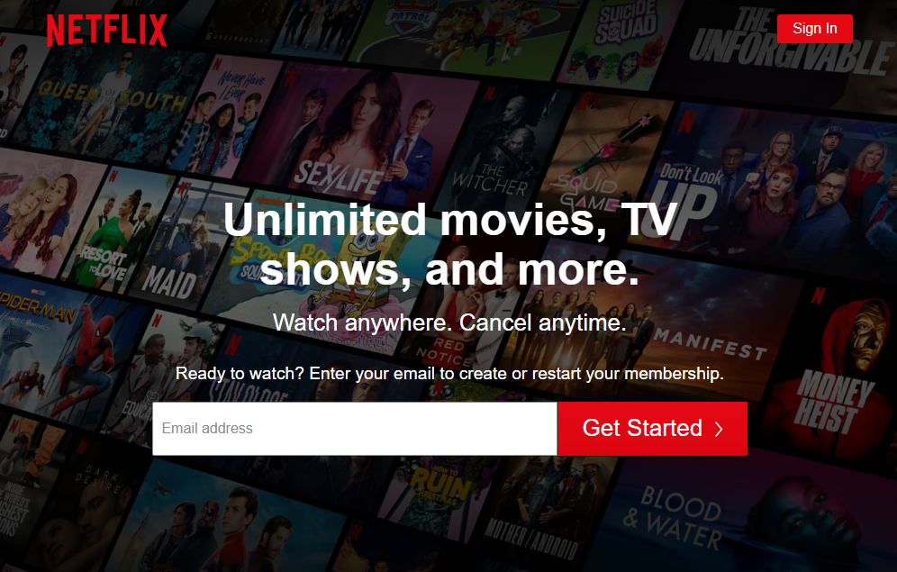
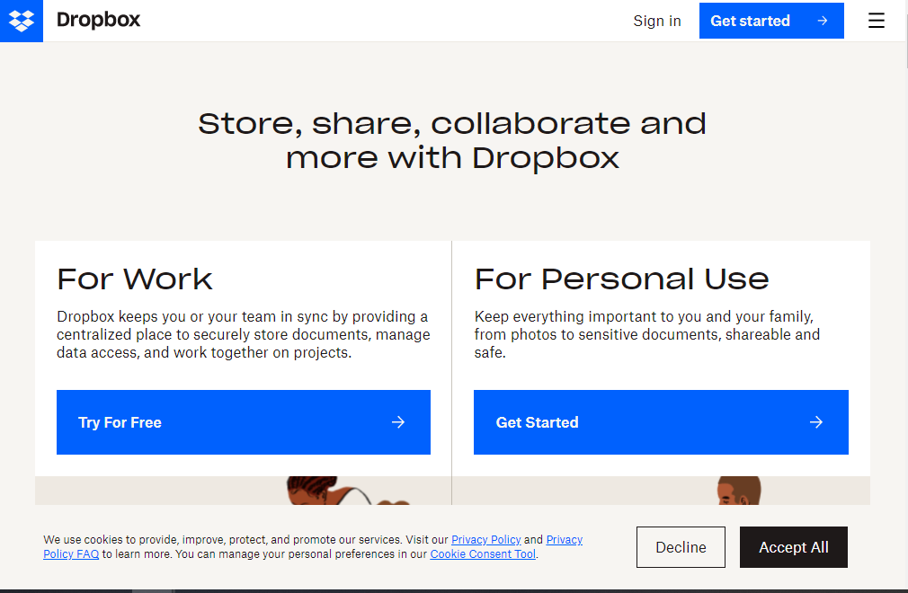
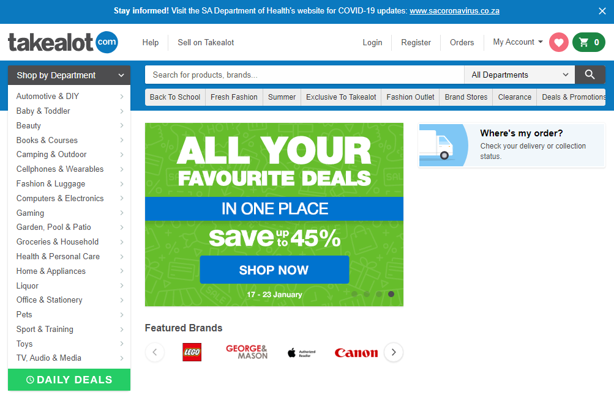

Visual Hierarchy
NETFLIX
Netflix When anyone goes on Netflix Website, they just want to sign up or sign in to watch movies or TV shows. To someone who has never heard of Netflix or someone who is looking for a streaming website, when they see Netflix, they will easily know and understand that Netflix offers streaming services of movies and TV shows. The font, color and contrast Netflix uses three levels that can be accessed on desktop, smart TVs and mobile phones. it looks the same on both of these devices which means they use repetiton that makes the visitor jump in right away to sign in. The words like unlimited movies, TV shows, and more, makes the viewer understand what Netflix offers without scrolling down to get More information. The purpose of the website is to lead people to sign up or sign in that is why there is few details on the main section of the main page and seeing that only, definitely you are going to sign up.
The Power of White Space
Dropbox
Dropbox Dropbox is one of the best website that has the best white space between the design. The white space on the website brings great balance to the design and give the best visual communication to the user. On this page you will find macro and micro white space. For an exapmle, you will find micro white space in the margins of each design. micro element are the small space between the design. Macro space is found mostly in the center of the page. macro white space is the large space that is found on the major elements of the page. In this page micro and macro white space is consistance.
Hick's Law
Takealot
Takealot Takealot gives the right amount of coices to the user and makes it easier for the user to choose which product do they want. I have used it many times and the way it is designed made me not to wonder too much on what I should buy. The whole site and their app contains and practice the Hick's law. You can also find other design princliples that I have mentioned in other sections of this page. These design principles gives the user the best and worth remembering experience and they will come back again to experience the calmness your website brings.